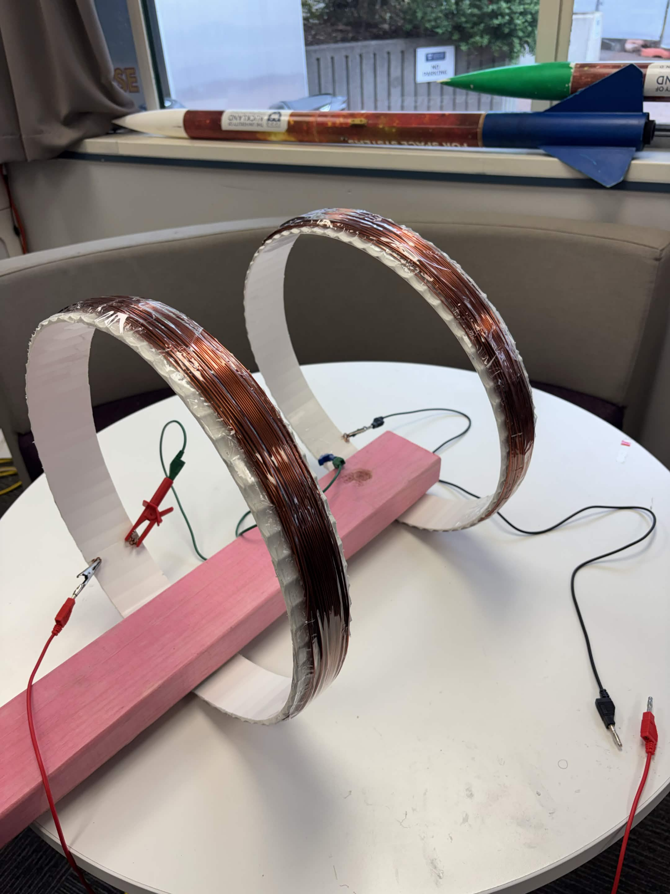
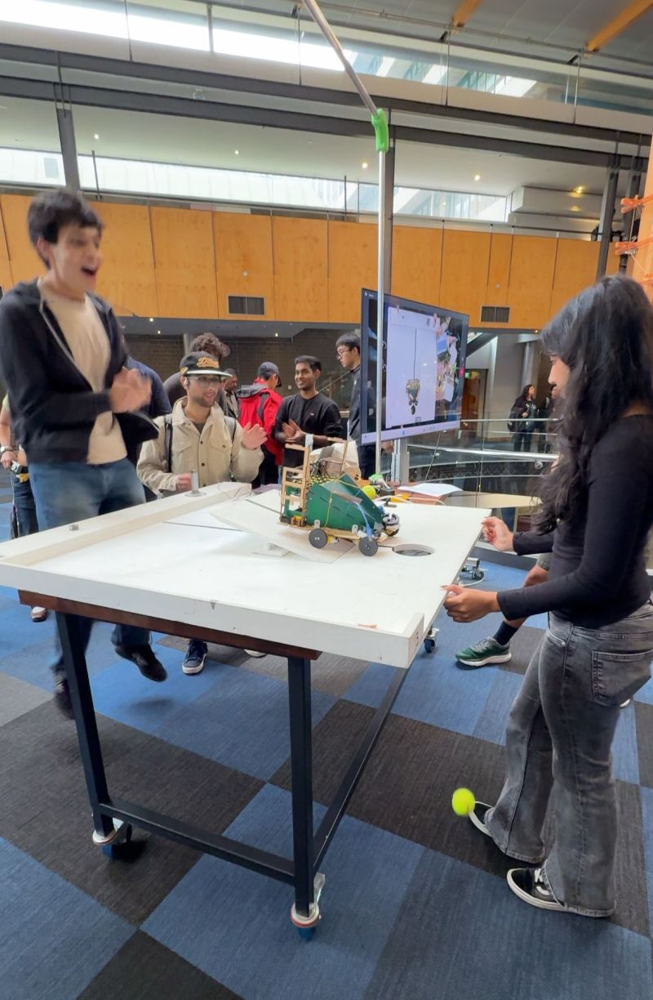
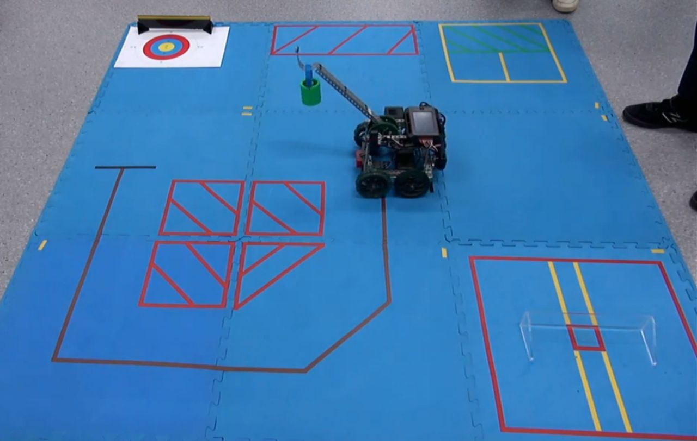
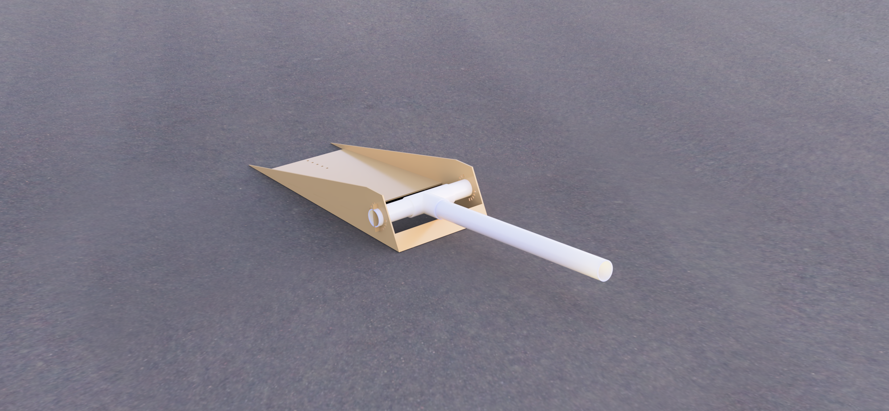
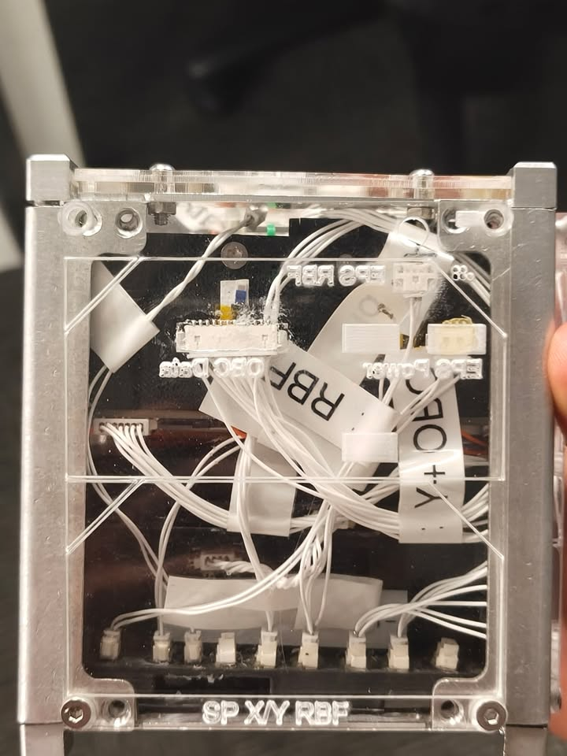
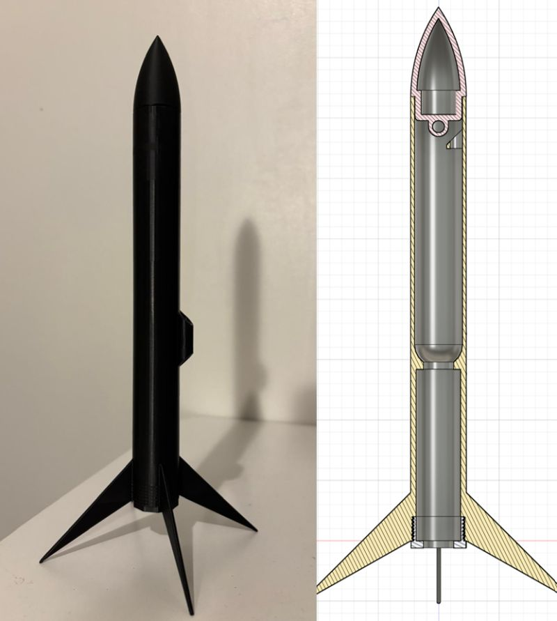
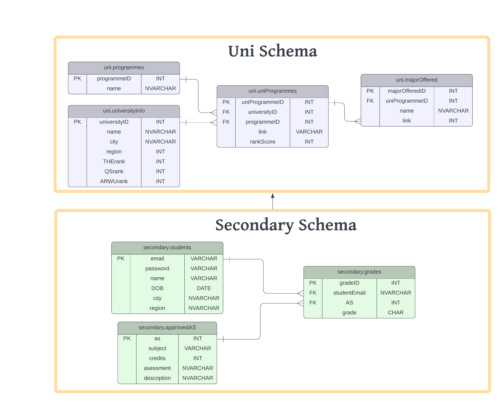
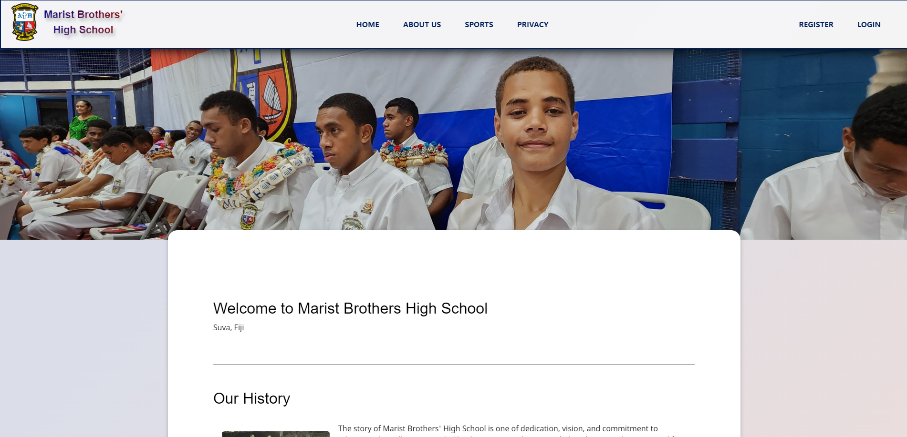

01 / 08Space systems
Helmholtz coil test rig
A magnetic-field test setup for our CubeSat’s magnetorquers.
Coils built · Rig in progressExplore project ↗
Mechatronics Engineering / University of Auckland
Mechanical design. Robotics. Space systems.

01 / 08Space systems
A magnetic-field test setup for our CubeSat’s magnetorquers.

02 / 08Robotics
Collect two payloads, cross a bridge and deliver them autonomously.

03 / 08Robotics & control
Encoder-based motion control and a three-sensor line follower with directional memory.

04 / 08Mechanical design
A spring-powered launcher with the payload attached directly to its arrow.

05 / 08Space systems
Turning the component layout into a physical wiring and integration model.

06 / 08Mechanical design
A rocket taken from CAD and flight simulation to a printed prototype in one week.

07 / 08Software
One place to compare New Zealand universities’ programmes, majors and source information.

08 / 08Software
A public website and staff-data prototype developed with the school’s principal.
Contact
Space systems
A magnetic-field test setup for our CubeSat’s magnetorquers.
I’m leading the design and build of paired coils to test our CubeSat’s magnetorquers—the devices that use magnetic fields to change the satellite’s orientation.
I began with the space around a 100 mm cube. Its corner-to-corner diagonal is approximately 173 mm.
The initial study explored a roughly 600 mm coil diameter. I reduced the nominal diameter to 400 mm to make the build affordable.
A smaller coil uses less wire, but also reduces the region of uniform magnetic field. I had to balance that against what we could actually manufacture.
The early design study used a 200 mm radius, a 30 V / 5 A power supply limit and a 1,400 µT field target. That target was below the compass’s stated 1,600 µT range, while aiming for enough torque to make rotation easy to observe.
| Wire | Current | Turns / coil | Total wire | Voltage |
|---|---|---|---|---|
| 14 AWG | 5.00 A | 63 | 158 m | 6.55 V |
| 16 AWG | 3.93 A | 80 | 201 m | 10.4 V |
| 18 AWG | 2.47 A | 127 | 319 m | 16.5 V |
I found a 198 m spool of 16 AWG magnet wire that offered the best value. The shorter length gave a calculated field of approximately 1,378 µT at 3.93 A. These are sizing estimates, not measured field values.
Both coils are complete. I’m now working on the rig that will hold the experiment.
Robotics
Collect two payloads, cross a bridge and deliver them autonomously.
Two arms lower, the robot reverses beneath the payloads, and geared drives lift them onto the ramp.
Dual infrared sensors guide the independently controlled left and right wheel drives along the line and over the bridge.
The robot locates the drop-off and opens a servo-operated gate, letting the payloads roll into the target.
During testing, the payloads sometimes failed to roll down the ramp consistently after crossing the bridge. I added a zip-tie suspension arrangement to cushion their landing from the arms and redirect them down the ramp.
It was a small change to the existing mechanism, but it improved the reliability of the final run.
Each wheel used three MDF layers and a printed spacer. I worked on the mounting and O-ring fit to improve traction and reduce looseness.
I worked with teammates to rebuild the electronics on Veroboard, a solderable stripboard. We secured the connections and components so faults were easier to trace.
The team reduced chassis mass and added two 200 g front counterweights to address tipping on the incline.
The chassis and ramp were laser-cut with interlocking slots. Printed parts handled custom geometry such as gears and sensor mounts. We kept parts removable where we needed access to the electronics.
I also worked on cutting, drilling, sanding and fitting components during final assembly. The starting configuration had to fit within a 300 mm cube and the mission had a 60-second limit.
| Ten-run test | 8.61 s reported mission time |
|---|---|
| Time range | 8.18–8.93 s |
| Payload capture | Both payloads captured in all 10 runs |
Robotics & control
Encoder-based motion control and a three-sensor line follower with directional memory.
For our second-year robotics course, we programmed a VEX V5 robot to leave its charging station, collect a payload, follow a brown line, deposit the load and return within 120 seconds.
We chose to carry the payload through the line-following section, then return using encoder-based navigation. I worked on the C programming for motion control and line following as part of our two-person team.
A PI loop controlled distance using the left encoder. A separate P loop compared both wheel encoders and applied opposite corrections to keep the robot travelling straight.
We calculated rotation from the difference in wheel travel. A PI controller drove the wheels in opposite directions, with a rising power limit to reduce slip.
A P controller moved the arm within 2° of its target. The upper limit switch reset the encoder before every run, giving a repeatable angular reference.
Three light sensors classified the brown line. I used the recent direction of travel to recover when all three sensors lost it at a sharp corner.
The three sensors produce a left / middle / right pattern. Small and large misalignments receive different steering corrections.
When all sensors see brown, compare the two side readings and remember the side with the stronger reading.
If the pattern becomes 000, turn towards the remembered side until a sensor finds the line again.
| Pattern | Response |
|---|---|
010 | Drive straight at base power. |
110 / 011 | Apply a small correction towards the line. |
100 / 001 | Use 1.5 times the correction effort for a larger misalignment. |
111 | Continue straight and update the stored direction from the stronger side reading. |
000 | Recover towards the last recorded direction. |
We used a broad brown-reading window of approximately 1,200–2,300 sensor units. This captured a sensor grazing the line as well as one directly over it, reducing sensitivity to lighting and small sensor differences.
For the black stop line, all three sensors had to detect black together. That avoided false stops from overlapping black/brown readings and helped the robot finish aligned with the line.
drivePIcont() ramped its output limit from zero towards 99%. It accumulated the integral only below the active limit to avoid wind-up, and finished after staying within 10 mm of the target for 0.5 seconds.
turnPIcont() used wheel geometry to convert encoder counts into angle. It applied a 3° clockwise offset and a −2° counter-clockwise offset to account for drivetrain backlash.
driveSonar() took an initial ultrasonic reading, calculated the travel required to reach the requested stand-off distance, then called the encoder-based distance controller.
getArmPosition() accounted for the 1:7 motor-to-arm gear ratio and reset-angle offset. Friction and gearing made proportional-only arm control sufficient for this task.
The demonstration runs were mostly under 45 seconds and consistently earned the time bonus. Payload placement was typically in the 40- or 50-point zone, with the total score reaching the rubric’s 100-point cap.
A small initial misalignment from wheel backlash remained. Rolling the wheels forward before each run helped take up the slack, but did not remove it completely.
Our proposed next improvement was to follow the early part of the line faster, then slow near the end for better drop-off alignment. Using the magnitude of sensor readings for proportional line correction was another improvement we identified.
Mechanical design
A spring-powered launcher with the payload attached directly to its arrow.
Our team took the MECHA design and build competition’s Odyssey theme and built a bow that launched nuts on a dowel-like arrow.
The aim was a strong payload-to-time result. We could carry fewer nuts at higher speed, or add mass and accept slower flight. I was part of the team designing and physically building the launcher.
Holes in the front plate let us change the initial draw. Four springs in series provided extension, with three parallel chains on each side increasing the combined force.
Grooves in the side plates allowed height adjustment. Securing prongs limited unwanted rotation. Our presentation used a nominal 5° launch angle.
A guide rail constrained the arrow during release, helping keep the launch direction consistent.
The structure combined MDF with PVC pipe. We considered loads of 5–15 nuts and could adjust the spring extension without rebuilding the launcher.
The final restraint was a zip tie that had to be cut to fire. We did not complete a reusable trigger in the available time. A repeatable release and reload mechanism would make it easier to compare payload and spring settings consistently.
Space systems
Turning the component layout into a physical wiring and integration model.
For the Auckland Programme for Space Systems (APSS), I created the first proper visual prototype of the V2 payload. It gave the team a physical way to examine component placement and the network of cables.
Make physical replacements for the electrical components.
Assemble the model and crimp the wiring between components.
Work through cable paths within the available space and record the arrangement.
The work focused on mechanical packaging and cable routing. A physical model made it easier to inspect the space around components and see how cables passed through the assembly.
This was a development model for the team’s integration work, rather than flight hardware. I documented the process so others could review and continue the work.
Mechanical design
A rocket taken from CAD and flight simulation to a printed prototype in one week.
I designed the rocket independently for my application to the APSS mechanical team. I used Fusion 360 for the geometry, OpenRocket for flight modelling and PLA printing for the prototype.
The design work balanced aerodynamic stability, predicted altitude and a structure I could manufacture within the deadline.
I positioned the centre of gravity ahead of the centre of pressure, targeting a stability margin of two body diameters. The resulting model predicted a 148 m apogee.
| Length | 250 mm |
|---|---|
| Maximum diameter | 23 mm |
| Fin configuration | Four trapezoidal fins |
| Centre of gravity | 146 mm |
| Centre of pressure | 192 mm |
| Stability | 2 calibres |
The simulation explored the fin geometry and modelled PLA construction. These are design-model values. The altitude result is a prediction, not a measured flight.
I presented the design, prototype and simulated flight metrics, securing my place on the Auckland Programme for Space Systems mechanical team.
Software
One place to compare New Zealand universities’ programmes, majors and source information.
Comparing universities meant navigating different websites and programme structures. I developed the data-collection workflow, relational database and web application to bring those options together.
Configure browser-based scraping sitemaps, selectors and regular expressions for the public course information.
Format the exported data in spreadsheets, then use Unicode text for bulk insertion into SQL Server.
Retrieve and filter records through C# controllers and display them in Razor views.
I separated university information from programme records, with a junction model for each university’s offerings and a child table for majors. Primary and foreign keys connected the records.
The site used ASP.NET Core’s Model–View–Controller structure and Entity Framework Core. Models defined the data and validation, controllers retrieved and filtered records, and views presented the results. I used migrations to create and update the database.
I replaced raw foreign-key values with readable university and programme names. Programme names linked to the original university pages.
I used ASP.NET Core Identity for registration and login. Create, update and delete actions required authentication in the controllers, as well as hiding those controls from logged-out visitors.
Testing exposed invalid rank values and name/email validation issues. I added DataAnnotations range checks, revised regular expressions and repeated boundary tests. Unicode data types preserved Māori characters and macrons.
I initially planned to store all entry requirements directly. Their complexity varied too much between universities, so I used links to the source pages for detailed requirements. This high school project used the course information available at the time.
Software
A public website and staff-data prototype developed with the school’s principal.
I met with the principal of Marist Brothers High School in Fiji to understand what the school needed, then designed, built and demonstrated a working prototype.
Shared navigation and page layouts helped families find school information and contact details. CSS Grid, Flexbox and media queries handled the responsive layout.
Linked records represented students, teachers, subjects, departments, exams, grades and news. Junction tables connected teaching assignments and class membership.
I used Razor views within ASP.NET Core MVC and built reusable layouts for the information pages. A JavaScript menu control toggled navigation on smaller screens.
The original homepage relied too heavily on fixed positioning. When it failed at different screen sizes, I reworked the layout with Flexbox, Grid and media queries.
The staff-data design included teacher roles and a teacher-role junction table, separating staff workflows from the public information pages.
I documented functional and boundary tests for navigation, responsive layouts, registration, login and data-entry forms. Cases included empty required fields, duplicate registration, mismatched passwords and text-length limits.
For grades, I tested values outside 0–100 and the boundaries themselves. I also checked date rules for exam records and length limits for news posts.
The completed system was demonstrated as a prototype to the school.